Python 3.8+ · no dependencies · Linux, macOS, Windows
See exactly what Claude Code
is putting in your context window.
Two small tools. A status bar for the bottom of your terminal, and a local page that reads the session log Claude Code already writes and shows you every token in the window — reasoning, tool calls, injections, system prompt — as a timeline, a flow, or a table.
§What this is
Claude Code writes an append-only transcript of every session to
~/.claude/projects/<project>/<session>.jsonl. It
never shows you that file. These two tools read it.
statusline/
One row at the bottom of Claude Code: model, context bar, percent used, cumulative tokens in and out, message count, session cost. Renders in a few milliseconds, on every prompt.
dashboard/
A local web page on 127.0.0.1 that attributes every token
in the window to a source, places each one on the wall clock, and
lets you filter, inspect and export the lot.
Neither one sends your data anywhere. There is no telemetry, no account,
no network call, and the dashboard binds to loopback only. The one thing
that reaches outside the checkout is the status bar's installer, which
sets a single key in settings.json — everything else is
written next to the tools themselves. Install has
the full list.
§Install
Clone the repository once. Both tools run from the checkout — there is no
build step and nothing to pip install, because both are
standard-library Python 3.8 or newer.
git clone https://github.com/abdulwasea89/traj-claude.git
cd traj-claudeInstall the status bar
The installer copies statusline-command.py into your Claude
Code directory and points statusLine at it in
settings.json.
cd statusline
python3 install.py
On Windows use python instead of python3. Then
restart Claude Code — a status line is read once, at
startup, so a bar that does not appear is usually a session that was
already running.
python3 install.py --dry-run # show what would change, write nothing
python3 install.py --uninstall # remove the statusLine entry again
python3 install.py --python /usr/bin/python3.12
It backs settings.json up first and writes exactly one key —
what the installer does to your settings, below.
Run the dashboard
There is nothing to install. It reads the transcripts Claude Code already
writes, under ~/.claude/projects.
cd dashboard
python3 trajectory.py serve # http://127.0.0.1:8788 — Ctrl-C to stop
python3 trajectory.py on its own starts the same server in the
background, prints the address and gives your shell straight back. Either
way it binds to 127.0.0.1 only — the transcript holds your
prompts, your code and your file paths, so it does not go on a network.
Requirements
| Python | 3.8 or newer — check with python3 --version |
| Dependencies | none, and that is a constraint rather than luck |
| Platform | Linux, macOS, Windows |
| Reads | ~/.claude/projects/*/*.jsonl and stats-cache.json |
| Writes | the status line's cache in ~/.cache/claude-statusline, the dashboard's dashboard/trajectory.config.json, and — only from install.py — one key of ~/.claude/settings.json |
1The status bar
The whole thing fits in the row Claude Code already reserves at the bottom of the terminal.
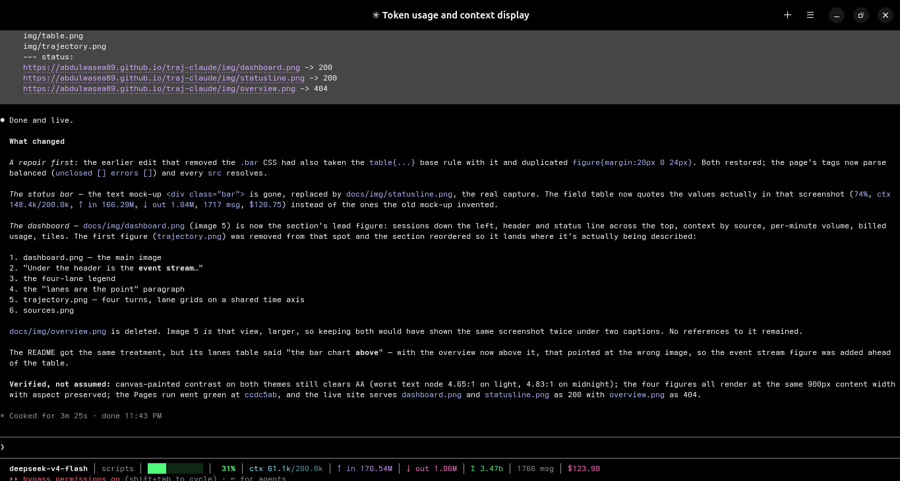
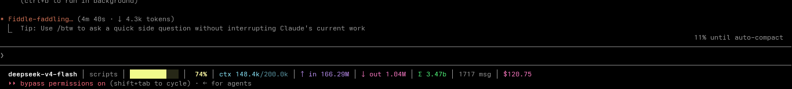
11% until auto-compact.
| Field | What it is |
|---|---|
deepseek-v4-flash | The model serving this session. |
scripts | The project directory you are in. |
███████░░░ | Context window used. The colour shifts green → yellow → orange → red as it fills. |
74% | The same thing as a number. |
ctx 148.4k/200.0k | Tokens currently in the window, over your configured limit. |
↑ in 166.29M | Cumulative input for the session: fresh input + cache reads + cache writes. |
↓ out 1.04M | Cumulative output tokens this session. |
Σ 3.47b | All-time tokens across every session, from Claude Code's own stats-cache.json. |
1717 msg | Your prompts plus the model's replies, this session. |
$120.75 | Derived session cost — shown only when you supply rates. Never guessed. |
Fields drop out rather than showing a placeholder when they are not
available. With no transcript yet you get the bar, 0%, and
no transcript yet.
What the installer does to your settings
Editing a file Claude Code owns deserves specifics, so:
- It backs the file up first, as
settings.json.bak-<timestamp>, next to the original. - It sets exactly one key —
statusLine. Yourenv,permissions,hooks,model,themeand everything else are read, kept, and written back. - It never prints your
envblock. For a lot of people that is where a plaintext API token lives, and a tool that echoes it into a terminal has leaked it into your scrollback. - If
settings.jsonis not valid JSON it refuses to write and says why. A settings file broken by a helpful installer is a much worse problem than a missing status line.
python3 install.py --dry-run # show what would change, write nothing
python3 install.py --uninstall # remove the statusLine entry
python3 install.py --python /usr/bin/python3.122The trajectory dashboard
A local page over the transcript. It answers the question the transcript makes surprisingly hard: what is actually in my context window, and when did it get there?
cd dashboard
python3 trajectory.py # start it and open the browser
python3 trajectory.py serve # the same server, without opening a browser
python3 trajectory.py --text # a report in the terminal instead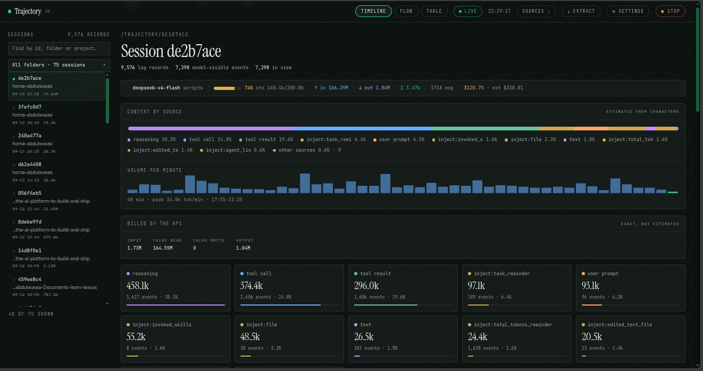
Under the header is the event stream: one row per turn, one bar per measured span between two records, placed on a wall-clock axis. Each turn is split into four lanes.
The lanes are the point of the view. A turn that took four minutes and a turn that took four minutes and nineteen tool calls look identical in a transcript and completely different here. A lane is read off what the span points at, so the width of a turn is: how much of it was waiting on the model, how much was it thinking, how much was it writing, and how much was tools running.
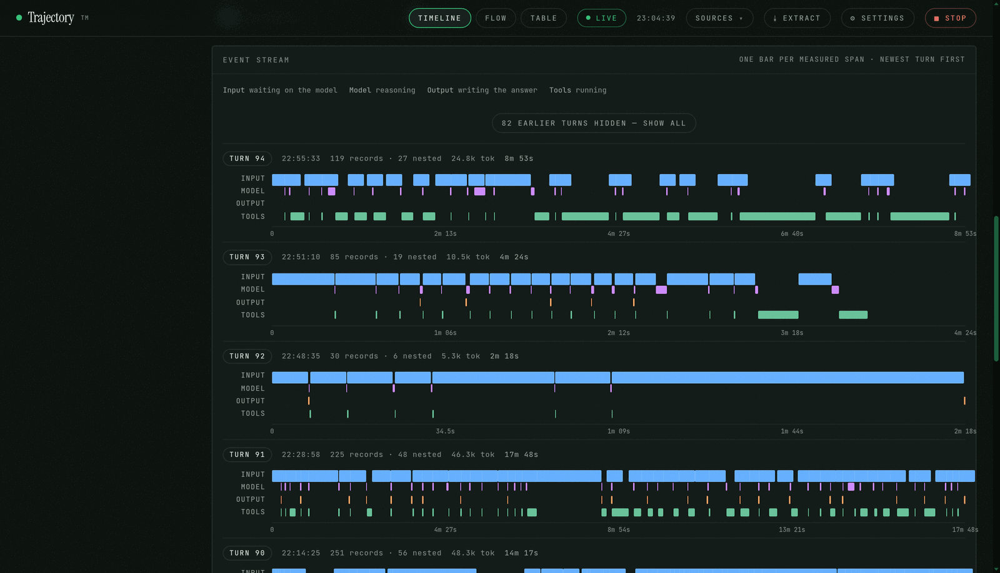
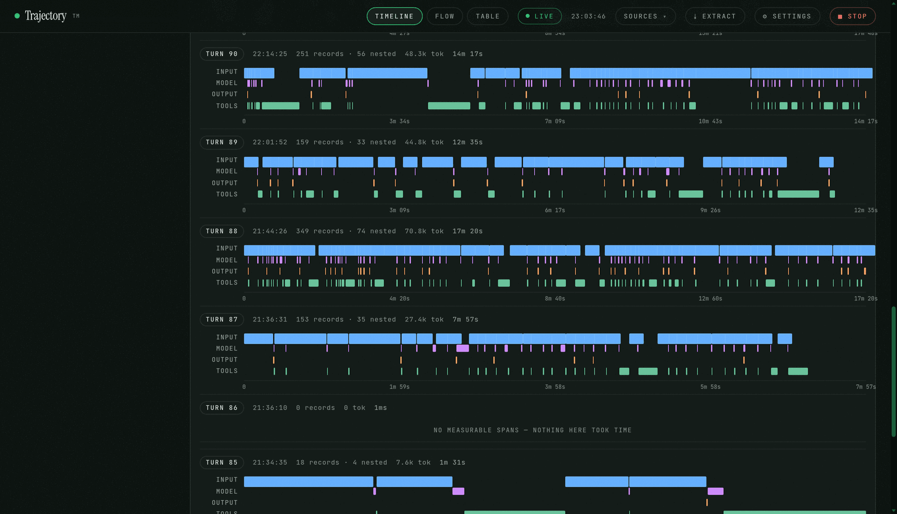
§The five views
The tab strip in the middle of the nav switches between the session views; Extract and Settings are pages in their own right, with their own address and their own title.
Timeline
The event stream above, plus the per-source breakdown. Hover any bar for a summary of the span it covers; click one to open the full record in the inspect panel.
Flow
The session as nested steps, with each tool call paired to the result it produced. Subagent work nests under the call that spawned it.
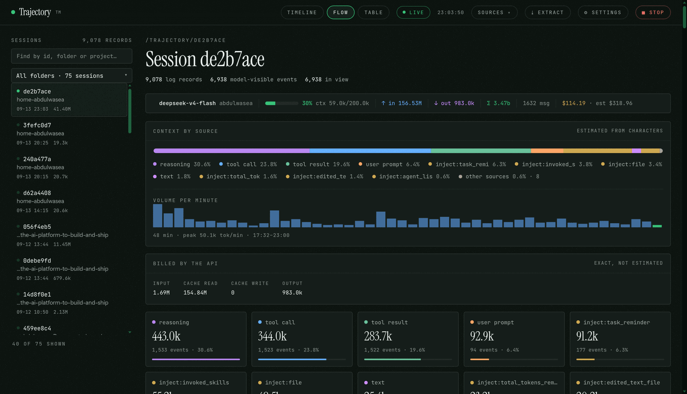
Table
Every event, in order, one row each. Filterable, sortable, expandable — for when you want to find one specific thing rather than a shape.
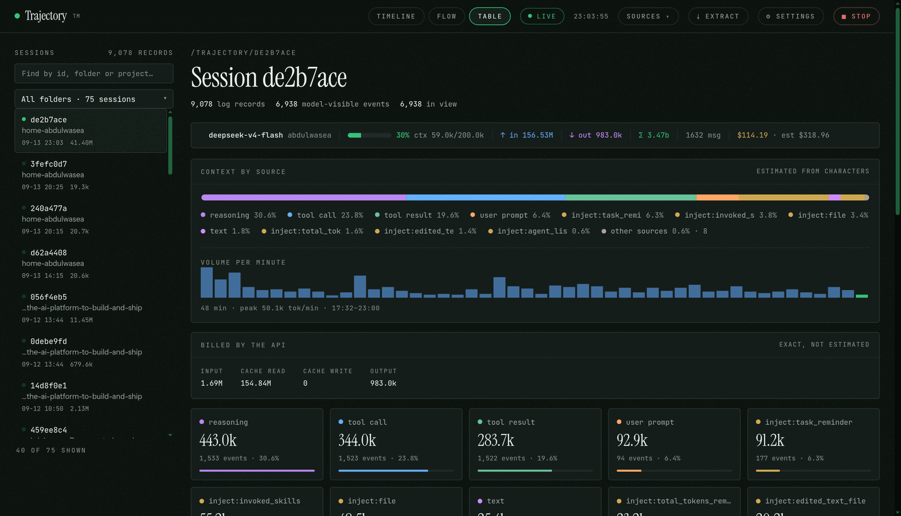
Settings
Around 140 knobs across appearance, source colours, timeline, flow, table, filters, accounting and the server. Every one of them changes real behaviour — there are no cosmetic toggles.
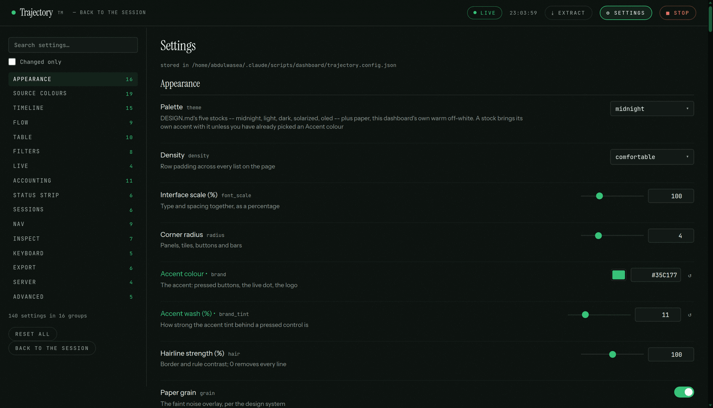
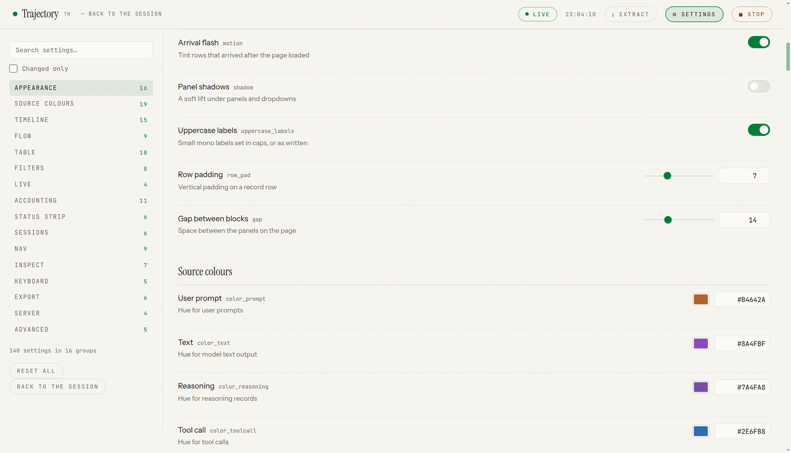
Extract
Writes what you are looking at to JSON, Markdown or CSV — the current view, the current filters, the current session. It is a real route, so you can link someone straight to it.
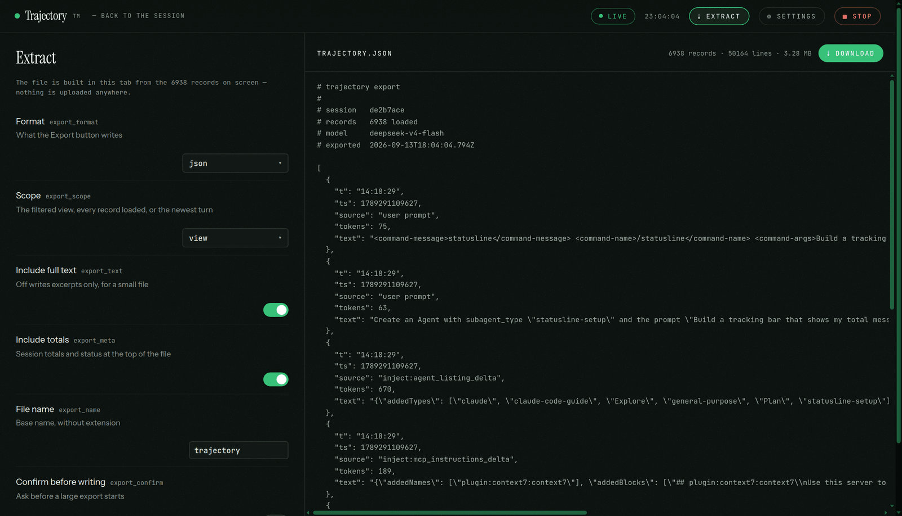
§Why the numbers are right
Claude Code's transcript writes each assistant message roughly
2.5× as streaming snapshots, each carrying a
byte-identical copy of the same usage object. Summing every
record therefore inflates your totals by that factor — which is where a
lot of "I used 3 million tokens?" comes from.
Both tools deduplicate by message.id (user records by
uuid), so the numbers are exact counts of distinct
messages, not of transcript writes. Re-counting a long transcript on
every render would be slow, so the status line keeps a byte-offset cache
per session and only reads what was appended since last time. Streaming
duplicates are consecutive, so a bounded window of recent ids catches
them without persisting every id a session has ever emitted.
Page-level sizes are a different matter: characters, not tokens. Those are estimated from character counts so that sources are comparable with each other, and the dashboard says so where it shows them. The session's real billed usage is reported separately and is never an estimate.
§Palettes
Six stocks, under Settings → Appearance → Palette. midnight is the default: a green-cast near-black, declared in OKLCH so the ramp reads as what it is — one hue, lightness doing all the work.
#090F0C · #35C177#171612 · #259F56#000000 · #22D3EE#F7F5EF · #008039#FDF6E3 · #268BD2#F7F5F2 · #2F6F4E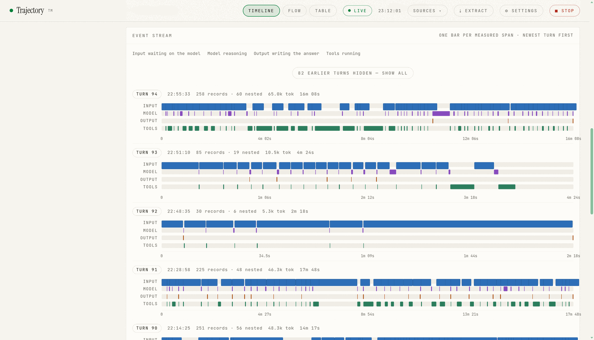
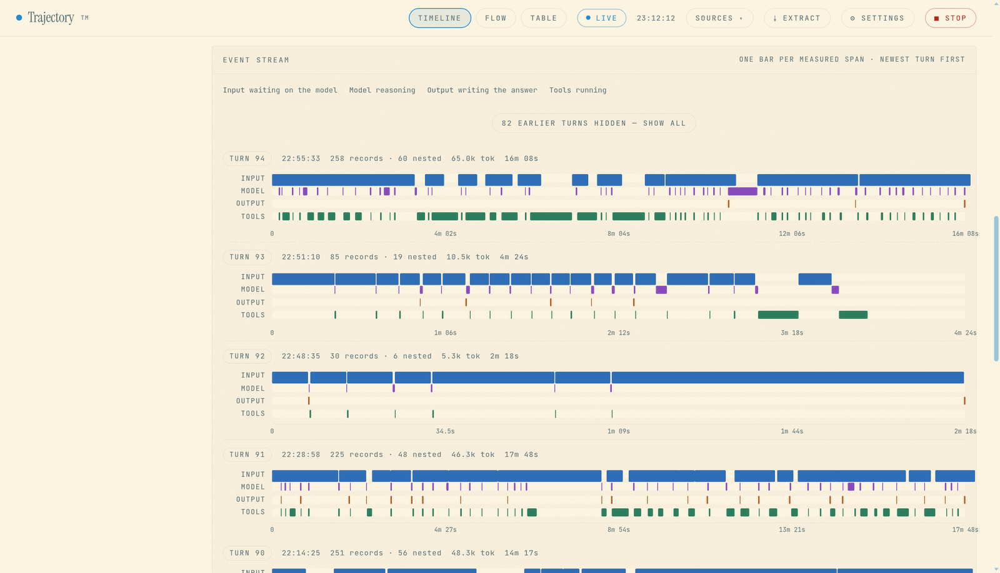
A palette brings its accent with it
Each stock is paired with an accent: a lighter green on the dark stocks,
because a 0.52 green sinks into a 0.16 background. Pick an accent by hand
in Settings and it survives every palette switch — a palette claims the
accent only while it is still the one the last palette put there. A
palette name from an older build (ink, green)
reads as the stock it became rather than resetting to paper.
Contrast
Text clears AA (4.5:1) on light, dark, midnight and oled.
The small voices are what that is measured against — the 9.5px labels,
the timestamps, the --faint ramp — and three stocks needed
work to get there: midnight's and dark's --faint were under
4.5:1, and oled's ramp was one step too light.
paper is left exactly as it was, so its
--faint still measures 2.8:1. solarized is
the one palette that cannot get there without ceasing to be Solarized:
base2 is only 1.13:1 from base3, so nothing clears AA on a base2 card.
Its surfaces therefore stay on Solarized's ramp and lift toward the sand
rather than away from it, and its two secondary voices are read off
Solarized's own blue-grey hue at the lightest steps that do clear. Its
signature blue is left alone, so it reads about 3.2:1 as 10px text.
Colours you pick are lifted, not replaced
A source colour is a saved setting, and its default was picked against a light ground. So the page never draws a source colour raw: it draws that colour at the lightness the current stock asks for — same hue, same chroma, lifted 1.38×, which is the ratio the design system itself uses between a stock's accent and its dark-stock version. A bar, a dot, a table rail and a label that speaks in that colour are all one value, so a colour you pick in Settings moves all of them. The three light stocks draw your settings' exact values.
Hairlines, and the scrollbars
Hairlines are not a grey at all: they are the stock's foreground at 10% and 5%, so they read as a line rather than as white on black. Hairline strength scales them, 100 being the design's 10%, 0 removing every line.
Scrollbars come from the palette too — thin, the stock's accent at 45%,
on a transparent track that lets the panel show through. It is the
standard scrollbar-width / scrollbar-color pair
doing the work rather than ::-webkit-scrollbar, because that
is what actually renders; the pseudo-elements are kept for older Blink,
which knows only those.
§The config file
The dashboard's settings live in dashboard/trajectory.config.json,
next to the script. It is written on the first change you make, or on the
first page load that has a migration to record. It is created with your
user's permissions and is not committed.
~/.claude/settings.json.
That file belongs to Claude Code. The only tool here that touches it is
the status line's installer, and it touches exactly one key.
Delete the file and the dashboard comes back up on its defaults. Every knob in Settings is in it, keyed by the same name the page shows.
§Environment variables
Both tools read CLAUDE_CONFIG_DIR and fall back to
~/.claude. The status line reads these; under Claude Code
the reliable place to set them is the env block of
settings.json.
{
"env": {
"CLAUDE_BAR_WIDTH": "16",
"CLAUDE_CONTEXT_LIMIT": "1000000",
"CLAUDE_COST_IN": "0.55",
"CLAUDE_COST_OUT": "2.19"
}
}| Variable | Default | Effect |
|---|---|---|
CLAUDE_CONTEXT_LIMIT | 200000 | Input context window in tokens. Set this to your model's real window or the bar and the percentage are both wrong. |
CLAUDE_BAR_WIDTH | 12 | Width of the progress bar, in cells. |
CLAUDE_SHOW_PROJECT | 1 | 0 hides the project name. |
CLAUDE_EXACT | 0 | 1 prints 3,431,260 instead of 3.43M. |
CLAUDE_COST_IN | — | USD per 1M input tokens. |
CLAUDE_COST_OUT | — | USD per 1M output tokens. |
CLAUDE_COST_CACHE_READ | — | USD per 1M cache-read tokens. |
CLAUDE_COST_CACHE_WRITE | — | USD per 1M cache-write tokens. |
CLAUDE_QUOTA_PER_USD | 500000 | Quota units per dollar, for gateways that report cost that way. |
CLAUDE_STATUSLINE_CACHE | ~/.cache/claude-statusline | Where the scan cache lives. |
CLAUDE_CONFIG_DIR | ~/.claude | Claude Code's directory, if you have moved it. |
Cost is only shown when you supply at least one rate. Guessing a price and printing it in dollars would be worse than printing nothing.
§Command line
trajectory.py with no arguments starts the dashboard and
opens it. Everything else is a flag on the same script.
| Command | What it does |
|---|---|
trajectory.py | Start the server and open the browser. This is the default. |
trajectory.py serve | Start the server without opening a browser. |
trajectory.py --port 9000 | Serve on a different port. |
trajectory.py --text | The terminal report instead of the page: a source summary, then the events in order. |
trajectory.py de2b7ace | A specific session, by id or id-prefix. |
trajectory.py --all | Every session transcript on disk. |
trajectory.py --limit 100 | More events in the text report (default 30). |
trajectory.py --source reasoning | Only one source, in the text report. |
trajectory.py --html --out r.html | Write a static snapshot — one file, no server, no live updates. |
§Advanced
Running it against a different Claude Code directory
Both tools read CLAUDE_CONFIG_DIR. Point it at a copied
directory and you can analyse a transcript from another machine, or a
backup, without touching your own:
CLAUDE_CONFIG_DIR=/mnt/backup/claude python3 trajectory.py --allA static snapshot for a report or a bug
--html renders the page to a single self-contained file. It
has no live updates and no server, which is exactly what you want when
you are attaching it to an issue rather than watching it.
python3 trajectory.py --html --out session.htmlFilters survive the view
The filter bar above the event stream is shared by every view. Filter to one source, one tool, a token floor, or a text match, then switch between Timeline, Flow and Table — the filter follows you, and the count beside the filter bar always says how many events are in view. Extract writes the filtered set, not the whole session.
The server
Under Settings → Server are four things, and one of them is worth reading twice:
| Setting | Default | What it does |
|---|---|---|
| Port | 8788 | What serve binds on. |
| Bind address | 127.0.0.1 | Setting this to 0.0.0.0 exposes the session log — your prompts, your code, your file paths — to everyone on your local network. Loopback is the default for a reason. |
| Open a browser on launch | off | Whether serve opens your default browser for you. |
| Log requests | off | Print every request to serve.log. |
Where it stores things
| Path | What |
|---|---|
~/.cache/claude-statusline | The status line's byte-offset scan cache. Delete it to force a full rescan. |
dashboard/trajectory.config.json | The dashboard's settings, next to the script. Delete it to go back to defaults. |
~/.claude/settings.json | Claude Code's own. Only statusline/install.py ever writes here, and only the statusLine key. |
§Troubleshooting
The status bar does not appear
Run the script by hand. A status line that crashes prints nothing, which looks identical to a status line that was never configured:
echo '{"model":{"display_name":"test"},"cwd":"/tmp"}' | python3 ~/.claude/statusline-command.py
It should print a bar. The script never exits non-zero and never prints a
traceback — on any failure it degrades to a minimal line, because a
broken status line should not take the session with it. If that command
works but the bar does not appear, the statusLine key is
missing or pointing at the wrong path; re-run
install.py --dry-run to see what it would write.
The percentage is wrong
CLAUDE_CONTEXT_LIMIT defaults to 200000. If your
model's window is a different size, the bar and the percent are both
scaled wrong. It is the one setting worth changing on a first install.
The status line is slow
The first render on a long session scans the whole transcript; after that
it reads only the bytes appended since last time. Delete
~/.cache/claude-statusline to force a full rescan.
Cost shows $0.00, or nothing
No rates are set, or the gateway reports its own cost as zero — many do.
Supply CLAUDE_COST_* and the figure is derived from token
counts instead.
The dashboard opens but shows nothing
It reads ~/.claude/projects/*/*.jsonl. If that directory is
somewhere else, set CLAUDE_CONFIG_DIR. If you have never run
Claude Code on this machine, there is nothing to read yet.
The dashboard will not open on my other machine
It will not, by default. It binds to 127.0.0.1, and the
transcript contains your prompts, your code and your file paths.
Settings → Server → Bind address will put it on 0.0.0.0 if
you really want that; it is your session log on your network, so it is
not the default.
§Collaborating
Issues and pull requests are both welcome. The project is small enough that there is no process to learn, but a few things make a change easy to take:
- Open an issue first for anything structural. The dashboard is still changing shape, and it is a lot cheaper to agree on the shape before either of us writes it.
-
Standard library only. Both tools are plain Python
3.8+. No
pip installfor anyone, and no dependency to audit. That is a constraint, not an accident. -
Python 3.8 is the floor. No walrus in a comprehension
position, no
match, nolist[str]in an annotation that gets evaluated. -
Keep the tokens in one place. A colour or a size is a
token in the stylesheet or a knob in
trajectory.py'sCONFIG_SPEC, never a literal in a component. A knob that does not change real behaviour is a bug, not a placeholder. - Say what you measured. If a change is about contrast, speed or size, put the before-and-after numbers in the pull request. "Looks better" is hard to review; "2.76:1 → 4.61:1 on the 9.5px label" is not.
- Test on a light stock and a dark one. Almost every layout bug in this project so far has appeared on one and not the other.
Where things live
statusline/
statusline-command.py the bar itself — reads the Claude Code JSON on stdin
install.py cross-platform installer for settings.json
README.md what each field means, every env knob, troubleshooting
dashboard/
trajectory.py transcript parsing, the terminal report, `serve`,
CONFIG_SPEC (every setting), and the HTTP server
trajectory_dashboard.py the page — waterfall, flow, table, settings, extract
docs/
index.html this page
img/ the screenshots above
Both files are large single files on purpose: the page is one embedded
string, so there is no build step, no bundler, and nothing between
git clone and a running dashboard.
§Licence
MIT. See LICENSE. Use it, fork it, ship it. If you fix something, upstreaming it is appreciated but not required.